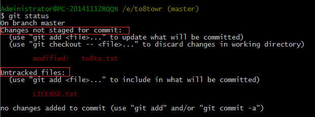
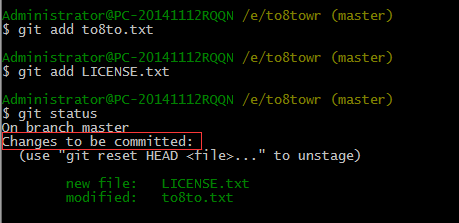
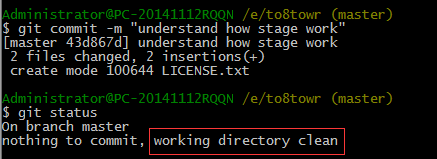

工作区和暂存区
Git和SVN之流的一个不同之处就是有暂存区的概念
我们来看几个名词解释：
工作区（Working Directory）：就是在你电脑里能看到的目录，比如我们建立的to8towr文件夹就是一个工作区，之前我们提到过的
版本库（Repository）：工作区有一个隐藏目录 .git,这个不算工作区，而是Git的版本库。
Git的版本库里存了很多东西，其中最重要的就是称为stage（或者叫index）的暂存区，还有Git为我们自动创建的第一个分支master，以及指向master的指针HEAD。

分支和HEAD后面再介绍。
前面讲了我们把文件往Git版本库里添加的时候，是分两步执行的：
第一步是用 git add 把文件添加进去，实际上就是把文件修改添加到暂存区；
第二步是用 git commit提交更改，实际上就是把暂存区的所有内容提交到当前分支。
因为我们创建Git版本库时，Git自动为我们创建了唯一一个master 分支，所以，现在 git commit 就是往 master分支上提交更改。
你可以简单理解为，需要提交的文件修改通通放到暂存区，然后，一次性提交暂存区的所有修改。
接下来，我们动手练习一下，先对to8to.txt做一下修改，加一行内容，如下：
Git is a distributed version control system.
Git is free software distributed under the GPL.
Git has a mutable index called stage.
紧接着，我们在工作区添加一个LICENSE.txt的文本文件，内容随意
先用 $ git status 查看一下状态
Git非常清楚的告诉我们，to8to.txt被修改了,还未提交；LICENSE.txt从来没被添加过，它的状态是 Untracked
现在，我们使用两次git add命令把to8to.txt和LICENSE.txt都添加了
$ git add to8to.txt --这个文件在修改之后，add之前，是在工作区
$ git add LICENSE.txt --这个新文件在add之前，是在工作区
然后用 $ git status查看一下状态
现在，暂存区就有了这两个文件,然后我们提交到分支 $ git commit -m “understand how stage work”
所以，git add 命令实际上就是把要提交的所有修改放到暂存区（Stage），然后，执行git commit就可以一次性把暂存区的所有修改提交到分支。
提交后，如果你对工作区没有进行任何修改，那么工作区就是“干净的”
目前，工作区和分支都有这两个文件，暂存区在commit之后，就没有任何文件了
小结：
暂存区是Git非常重要的概念，弄明白了暂存区，就弄明白了Git的很多操作到底是干什么的。
没弄明白的同学请回过头去再看一次，不然后面的操作理解起来会比较吃力。